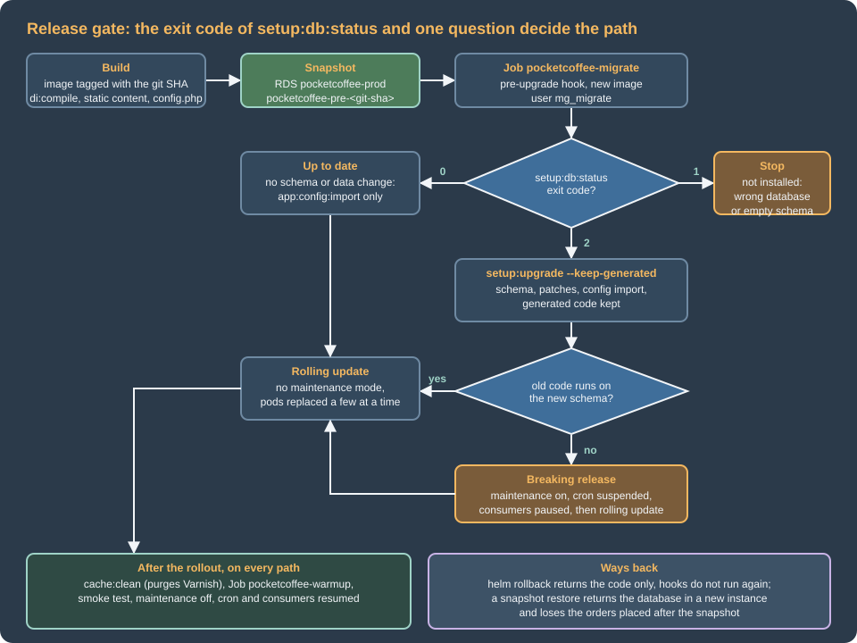

Cloud: Releases and Zero-Downtime Deployments
|
This content was generated with the assistance of AI and should be verified against the official documentation before being relied on in production. |
This page was written against Magento Open Source and Adobe Commerce 2.4.9 (general availability 2026-05-12) and Mage-OS 3.6.0, PHP 8.5 in the container image, MySQL 8.4 on Amazon RDS, Kubernetes 1.36 or 1.37 on Amazon EKS and Helm 4.3. It was checked on 2026-10-29. It names no prices: the cost drivers it mentions (snapshots, a second database for a rehearsal) are things to measure, not figures to copy.
A Magento release is more than "new code": it can change tables, import configuration into the database, register new store views, make
every cached object of the old code wrong for the new one, and change the URLs of the static files the browser holds. The single-server
procedure of Upgrades (maintenance mode, Composer, setup:upgrade, compile, deploy, cache, leave
maintenance mode) answers all of this with one writable tree and a closed shop. On a cluster the tree is an image that never changes, the
shop is a dozen pods that are replaced a few at a time, and the cache, the sessions and the queues outlive every deployment. This page
turns the sequence into a release pipeline that keeps the shop open for the routine release and closes it only for the release that
cannot be done any other way.
The running example is Pocket Coffee with the names of
Cloud: Reference Architecture: cluster pocketcoffee-prod, namespace pocketcoffee, Helm
release pocketcoffee, chart pocketcoffee-magento (helpers pc.*), ECR repository pocketcoffee/magento, RDS instance pocketcoffee-prod with
the users mg_app and mg_migrate, the modules PocketCoffee_RoastAdmin, PocketCoffee_Pay, PocketCoffee_Skeleton and PocketCoffee_Api,
the store views es, en and us, and the workloads pocketcoffee-web, pocketcoffee-varnish, pocketcoffee-cron,
pocketcoffee-consumer-<name>, pocketcoffee-migrate and pocketcoffee-warmup, in the account 123456789012 and the region eu-west-1.

What a release changes in a Magento shop
Magento keeps the state of a release in four places, and each has its own trigger and its own failure mode. The release pipeline has to touch each exactly once and in an order that the old pods can survive.
| What changes | Where it lives | How it is applied |
|---|---|---|
Code, generated code and static files |
The image ( |
A new image tag and a rolling update. Nothing to run in the cluster. |
Schema and data of the modules |
MySQL tables declared by |
|
Shared configuration |
|
|
System-specific and sensitive configuration |
|
A Helm release: the ConfigMap changes with the chart, the pods restart. |
Caches and indexes |
Valkey (cache types), Varnish (full page cache), OpenSearch and the index tables |
|
Two consequences set the shape of everything below. First, the database is changed before the new pods exist, so the old pods run, for the length of the Job and the rollout, against a schema that the new release already changed: every schema change has to be compatible with the old code or the release needs a maintenance window. Second, the configuration of the new release is imported into a database that the old pods are still using, which is harmless for a new module and visible for a theme or a store view.
What Adobe documents, and what is only for Adobe Commerce on cloud infrastructure
The Adobe documentation has three things that are called deployment, and they are easy to mix up when reading about "zero downtime".
| Source | What it describes | Applies to a self-built image on EKS |
|---|---|---|
Pipeline deployment (configuration guide, "deployment technical details") |
The split into a development system, a build system and a production system, with |
Yes, in full. It is generic and also holds for Mage-OS, which ships the same commands. |
Adobe Commerce on cloud infrastructure: deployment process ( |
A managed pipeline that runs these steps for you on Adobe’s infrastructure, with |
No. It is a managed service; the variables it names belong to it and have no effect on EKS. |
Zero downtime deployment on cloud infrastructure |
|
No. Its ideas (static content in the build, cache work after the rollout, warm-up) are what this page does with an image, a Job and a rollout, but the connection holding is a feature of the cloud platform. |
Adobe documents no blue/green procedure for Adobe Commerce or Magento Open Source. A search of the Experience League for "blue/green" finds it only in the documentation of Cloud Manager for Adobe Experience Manager, which is a different product. What exists is the pipeline sequence below, the zero-downtime configuration of the cloud platform, and the Kubernetes rolling update, which is what this page uses. A real blue/green (a second environment with its own database copy and a switch of the Gateway) is discussed in Blue/green and rolling releases as an option that you would build yourself, with the data problem that it brings.
The production sequence in Adobe’s pipeline documentation is, in this order: start maintenance mode, pull code and configuration, stop the queue workers (Adobe Commerce),
app:config:import, setup:upgrade --keep-generated if components that change the schema were installed, set system-specific and sensitive values (config:set, config:sensitive:set or environment variables), flush the cache,
end maintenance mode. On EKS the steps become: maintenance mode only for a breaking release (Maintenance mode on a cluster); code and config.php arrive in the image through helm upgrade; queue workers are stopped only for a
breaking release (The release workflow); the import and the upgrade are the migrate Job; system-specific and sensitive values come from env.php reading the ConfigMap and the Secret, because there is no config:set on a read-only image;
the cache is cleaned by the warm-up Job after the rollout (Cache clean, Varnish purge and warm-up); and ending maintenance mode is the last workflow step.
A word on the config:set options, because the question comes up. bin/magento config:set has three lock options in 2.4.9: --lock-env (-e) saves the value in
app/etc/env.php and makes the field read-only in the Admin, --lock-config (-c) saves it in app/etc/config.php, to be shared with other installations, and --lock
(-l) is deprecated in favour of --lock-env. Adobe’s pipeline page still shows the older --lock. In an image, neither file can be written at run time,
so these commands belong on the development system, where their effect is committed (config.php) or becomes an environment variable (env.php); a value that the
release must carry is set there, followed by app:config:dump. The precedence that Adobe documents is the reason this works: environment variables first, then env.php, then config.php, then the database, then the default.
The gate: setup:db:status
bin/magento setup:db:status asks every registered validator (schema, data, declarative schema, patches) whether the database matches the code. Its exit codes were read from
DbStatusCommand.php in the tags 2.4.8, 2.4.9 and Mage-OS 3.6.0, which all define them the same way:
| Exit code | Meaning | What the migrate Job does |
|---|---|---|
|
"All modules are up to date." |
Skips |
|
At least one validator is out of date, or failed: "Run 'setup:upgrade' to update your DB schema and data." The constant is |
Runs |
|
The deployment configuration is not available: "the Magento application is not installed." Also what an uncaught exception gives. |
Fails the Job: the release is being aimed at the wrong or an empty database. |
Two details matter for a Job. A validator that throws (for example because the database is unreachable or the user lacks a privilege) is reported as "Treating as upgrade
required due to validation error" and gives 2, so an exit code of 2 can mean a real upgrade or a broken connection; the Job then fails one step later, in setup:upgrade, with the real
message, which is why the gate is not a health check. And the command compares the database with the code of the image that runs it, which is exactly the question a release asks,
so it must run with the new image (the pre-upgrade hook uses the new image) and never with the one that is currently serving.
The gate is the cheap half of a safe release. Its value is what it prevents: a release that touches no schema skips setup:upgrade altogether, so
the most common release (a template, a CSS file, a plugin that adds no table) does not take the locks that setup:upgrade takes and does not clean the shared caches
(next section).
setup:upgrade as a pre-upgrade Job
setup:upgrade does more than change tables, and four of the things it does decide how the Job must be built. All four were read from the 2.4.9 sources of
UpgradeCommand, Installer and DeploymentConfig\Writer:
-
It cleans the caches of the running shop.
Installer::updateModulesSequence()flushes the configuration cache type and cleans the caches, and the command cleans them once more. The cache backend is the shared Valkey, so the old pods lose their cached configuration while they still serve traffic and rebuild it under load. Skippingsetup:upgradewhen the gate says0avoids this. -
It deletes the generated code unless
--keep-generatedis given. Without the optionInstaller::cleanupGeneratedFiles()clearsgenerated/and the compiled static files (the output of the lab on Upgrades listspub/static/deployed_version.txtamong them), and in production mode prints "Please re-run Magento compile command". The code in the image is compiled at build time, andgenerated/is baked in and not writable, so the option is not a choice: without it the Job would fail on the read-only filesystem or, if it could write, destroy the compiled code. The option’s own help text discourages it "except when deploying to production", which is this case. -
It always rewrites
app/etc/config.php.createModulesConfig()calls the configuration writer with the module list on every run, whether or not it changed. On a read-only image this fails with "The deployment config file isn’t writable". The Job therefore runs against a throwaway copy ofapp/etc(anemptyDirfilled by an init container, as the first-install Job of Cloud: EKS Infrastructure and Helm Deployment does), and checks afterwards that the module list that Magento computed equals the one in the image: if they differ, the web pods would run a different set of modules than the one that was just upgraded, and the release stops. -
It may rewrite
env.php.DbInitStatementsCleanupremoves a deprecatedSET NAMES utf8entry from theinit_statementsof the database connections and savesenv.phpif it removed anything. Theenv.phptemplate of this series sets noinit_statements, so nothing is written; if you carry an olderenv.phpwith that entry, the read-only file makes the Job fail until you remove it.
The Job also needs everything the application needs at boot: the database (as mg_migrate), OpenSearch (setup:upgrade validates the search engine configuration), the Valkey cache, and the
environment of the ConfigMap and the Secret. The mg_migrate password reaches the pod from the same Secrets Manager secret as the others (db_migrate_password, which the ExternalSecret writes as
MAGENTO_MIGRATE_DB_PASSWORD), and the Job overrides MAGENTO_DB_USER and MAGENTO_DB_PASSWORD because an explicit env entry wins over envFrom. The privileges of the two users
are on Cloud: Managed Database (RDS and Aurora); the parameter log_bin_trust_function_creators
that triggers need on a database with binary logging is there too.
The script lives in the image, versioned with the code. Here is the script, then the Job.
#!/usr/bin/env bash
# Release step of Pocket Coffee: run by the pre-upgrade Job as the migration database user.
set -euo pipefail
cd /var/www/html
magento() { php -d memory_limit=-1 bin/magento "$@"; }
# 1. The gate: does the database match the code of this image?
# Exit 0: up to date. Exit 2: setup:upgrade is required (also when a validator fails,
# for example on an unreachable database, which then fails in step 2). Exit 1: not installed.
set +e
magento setup:db:status --no-ansi
status=$?
set -e
case "${status}" in
0) echo "Schema and data are up to date for this image." ;;
2) echo "The database needs an upgrade." ;;
*) echo "setup:db:status exited with ${status}: Magento is not installed or the command failed." >&2
exit 1 ;;
esac
# 2. Apply. setup:upgrade imports the configuration itself (it calls app:config:import);
# when the schema is current only the import is needed.
if [ "${status}" -eq 2 ]; then
magento setup:upgrade --keep-generated --no-interaction
else
magento app:config:import --no-interaction
fi
# 3. The database must now be current.
magento setup:db:status --no-ansi
# 4. setup:upgrade rewrites app/etc/config.php (the modules list) in this Job's copy of app/etc.
# If the list differs from the one baked into the image, the web pods would run a different
# set of modules than the one just upgraded: stop the release.
php <<'PHP'
<?php
$new = require '/var/www/html/app/etc/config.php';
$old = require '/pristine/config.php';
$a = $new['modules'] ?? [];
$b = $old['modules'] ?? [];
ksort($a);
ksort($b);
if ($a !== $b) {
fwrite(STDERR, "The modules list of config.php in the image is not what setup:upgrade computes.\n");
fwrite(STDERR, "Run app:config:dump or module:enable in the build and commit config.php.\n");
exit(1);
}
echo "config.php of the image matches the modules list.\n";
PHP
echo "Release step finished"What the script does that the commands alone do not:
-
The gate, then the matching command.
setup:db:statusis run withset +eso that its exit code2is data and not a failure; any other code than0and2stops the Job. -
--no-interaction. Without it the commands may ask questions, and a Job has nobody to answer. With it the answer is yes, which is worth knowing aboutapp:config:import: see config.php, scopes and themes are deployed, not edited. -
The second
setup:db:statusproves that the upgrade did what it claimed. It is cheap and has caught half-applied upgrades. -
The
config.phpcomparison is the check that the Job’s throwaway copy ofapp/etcand the file in the image agree on the modules. A module that was enabled on a developer’s machine and not committed shows up here, in the Job, and not as "the module is missing on three of five pods".
{{- if .Values.migrate.enabled }}
apiVersion: batch/v1
kind: Job
metadata:
name: {{ .Release.Name }}-migrate
labels:
{{- include "pc.labels" . | nindent 4 }}
app.kubernetes.io/component: migrate
annotations:
"helm.sh/hook": pre-upgrade
"helm.sh/hook-weight": "0"
"helm.sh/hook-delete-policy": before-hook-creation,hook-succeeded
spec:
backoffLimit: 0
activeDeadlineSeconds: {{ .Values.migrate.timeoutSeconds }}
template:
metadata:
labels:
{{- include "pc.labels" . | nindent 8 }}
app.kubernetes.io/component: migrate
spec:
restartPolicy: Never
serviceAccountName: {{ include "pc.serviceAccountName" . }}
automountServiceAccountToken: false
securityContext: {fsGroup: 33, seccompProfile: {type: RuntimeDefault}}
initContainers:
- name: copy-etc
image: {{ include "pc.image" . }}
command:
- sh
- -c
- cp -a /var/www/html/app/etc/. /work/etc/ && cp /var/www/html/app/etc/config.php /work/pristine/config.php
securityContext: {allowPrivilegeEscalation: false, readOnlyRootFilesystem: true, runAsNonRoot: true, runAsUser: 33, runAsGroup: 33, capabilities: {drop: ["ALL"]}}
volumeMounts:
- name: etc
mountPath: /work/etc
- name: pristine
mountPath: /work/pristine
containers:
- name: migrate
image: {{ include "pc.image" . }}
command: ["/usr/local/bin/mg-migrate"]
securityContext: {allowPrivilegeEscalation: false, readOnlyRootFilesystem: true, runAsNonRoot: true, runAsUser: 33, runAsGroup: 33, capabilities: {drop: ["ALL"]}}
envFrom:
{{- include "pc.envFrom" . | nindent 12 }}
env:
- name: MAGENTO_DB_USER
value: {{ .Values.database.migrateUser | quote }}
- name: MAGENTO_DB_PASSWORD
valueFrom:
secretKeyRef:
name: {{ .Values.secrets.name }}
key: MAGENTO_MIGRATE_DB_PASSWORD
volumeMounts:
- name: etc
mountPath: /var/www/html/app/etc
- name: env-php
mountPath: /var/www/html/app/etc/env.php
subPath: env.php
readOnly: true
- name: pristine
mountPath: /pristine
readOnly: true
- name: var
mountPath: /var/www/html/var
- name: tmp
mountPath: /tmp
volumes:
- name: etc
emptyDir: {}
- name: pristine
emptyDir: {}
- name: var
emptyDir: {}
- name: tmp
emptyDir: {}
- name: env-php
configMap:
name: {{ .Release.Name }}-env-php
{{- end }}Source: Helm Docs: Chart hooks
Source: Kubernetes Documentation: Jobs
The values it reads are database.migrateUser: mg_migrate, migrate.enabled: true and migrate.timeoutSeconds: 1800; the helpers pc.*, the ConfigMaps and the ExternalSecret are those of
the Helm page. Points about the Job’s pod:
-
backoffLimit: 0. A failedsetup:upgradeis not retried automatically. DDL commits implicitly in MySQL, so a failure halfway leaves the schema half-changed, and a second attempt on top of it is a decision for a person who has read the log. The Job stays visible with its logs until the next release deletes it (before-hook-creation);hook-succeededremoves it after a good run. -
The init container and the four emptyDirs.
etcholds a writable copy ofapp/etc(withenv.phpmounted from the ConfigMap over it),pristinekeeps the untouchedconfig.phpfor the comparison,vartakes the logs, the cache of the Job’s own process and thevar/declarative_dumps_csvof--safe-mode.generated/andpub/static/stay baked and read-only. -
Hooks run before the new revision’s resources exist. The pre-upgrade Job reads the ConfigMap
pocketcoffee-env-phpas it was in the previous revision, because Helm creates the Job before it updates the ConfigMaps of the new revision. A release that adds a key toenv.php(a new backend, a new queue) therefore runs its migrate Job with the oldenv.php. Ship anenv.phpchange one release before the code that needs it, or render the ConfigMap as a hook resource with a lower weight than the Job; do not discover the problem in the Job’s log. -
First install. On the first release the hook does not run (it is
pre-upgrade, notpre-install) and the first-install Job of the Helm page takes its place. The Secret and the ConfigMaps must exist before the firsthelm upgrade, so install the chart once withmigrate.enabled=false.
config.php, scopes and themes are deployed, not edited
app:config:import copies the shared configuration of config.php (and env.php) into the database for three sections. Adobe’s page lists them: scopes (websites, store groups and
store views, imported in modes create, update and delete), themes (registered if their source code exists, never removed if missing from config.php) and system configuration, which is not copied at all
because Magento reads the system array of the file directly, so the values need no import. Root categories are not imported and have to be assigned in the Admin.
The delete mode is the one that matters for a pipeline. The importer in Processor::execute() asks for confirmation before it applies a section whose importer warns, and the Store importer warns
about "These stores will be deleted". The confirmation helper YesNo::execute() returns true without asking when the input is not interactive. A Job always runs non-interactively, so a store view that
exists in the database and is missing from config.php is deleted by the release. That is the documented model (the development system owns the scopes, and production receives them), and it has two
consequences for Pocket Coffee:
-
The store views
es,enandus, their groups and the website are created on the development system, exported withbin/magento app:config:dumpand committed. A store view that somebody adds in the production Admin is removed by the next release. -
A pipeline step compares what the dump of a restored production copy contains with the
config.phpof the release, and fails the release if a scope would be deleted. The deployment sequence has no such check, so it has to be yours.
The commands for it are bin/magento app:config:dump on the development system (check that app/etc/config.php contains modules, scopes, themes and system) and a commit of the file.
The dump writes the sensitive settings nowhere (Adobe’s page: "It does not write sensitive settings"), so a payment gateway key that the Admin shows on the development system never ends up in git, and on
production it comes from the Secret through env.php. The shared and the environment-specific split is also what lets one image run in staging and in production with different ConfigMaps and Secrets.
app:config:import skips a section whose hash did not change ("Nothing to import" when nothing changed); the hash is stored in the database. A release in which nothing changed in config.php therefore does no
work in the Job, which is the second reason for the gate.
Maintenance mode on a cluster
bin/magento maintenance:enable makes Magento answer 503, and --ip=<address> (repeatable) exempts the addresses of the people who test. The mechanism is two files in var/: .maintenance.flag and
.maintenance.ip, defined as MaintenanceMode::FLAG_FILENAME, IP_FILENAME and FLAG_DIR = DirectoryList::VAR_DIR. On a single server that is one place. On the cluster
of this series var/ is an emptyDir per pod, so the command run in one pod closes that pod and no other, and a pod that starts a minute later is open. The usual remedies do not fit:
-
kubectl execin every pod. It works for the pods that exist, not for the HPA’s new pods, restarted containers or the pods of the rollout; it is a race, not a switch. -
A shared
var/. A ReadWriteMany volume forvar/would make the flag shared and the cache, the logs and the sessions shared with it. This series keepsvar/per pod on purpose.
The switch that works is outside the application: the nginx container of every web pod returns 503 while a flag file exists, and the flag file comes from a ConfigMap mounted as a directory, which
Kubernetes updates in the running pods (after the kubelet’s sync delay, typically a minute, so it is not instantaneous; files mounted with subPath are not updated). Varnish does not cache the answer: the generated VCL
refuses to cache responses that are not 200 or 404.
# conf.d/maintenance.conf of the nginx container of pocketcoffee-web and pocketcoffee-admin.
# The flag is the file "enabled" in the ConfigMap pocketcoffee-maintenance, mounted as a directory.
geo $maintenance_exempt {
default 0;
203.0.113.10 1; # the VPN address of the team (documentation range)
}
# Inside the server block, before the location that passes requests to PHP-FPM.
set $maintenance "";
if (-f /etc/nginx/maintenance/enabled) {
set $maintenance "on";
}
if ($maintenance_exempt = 1) {
set $maintenance "";
}
if ($maintenance = "on") {
return 503;
}
error_page 503 @maintenance;
location @maintenance {
root /usr/share/nginx/maintenance;
add_header Cache-Control "no-store" always;
add_header Retry-After 600 always;
rewrite ^ /maintenance.html break;
}Source: nginx documentation: error_page
The ConfigMap pocketcoffee-maintenance is created by the chart with empty data and mounted at /etc/nginx/maintenance; the page maintenance.html is part of the image at
/usr/share/nginx/maintenance/. release-control.sh maintenance-on of the workflow adds the key enabled, maintenance-off removes it. The configuration was checked with nginx -t and exercised in a
container (200 without the flag, 503 with it and the maintenance page with Cache-Control: no-store); the geo block uses $remote_addr, so behind the ALB it needs the real client address (set_real_ip_from and the
forwarded header) configured as on Cloud: Varnish and Full Page Cache on Kubernetes.
Whether Helm’s merge keeps a key that kubectl patch added to a ConfigMap that the chart owns, across helm upgrade, depends on the Helm version and its apply strategy; I did not test it with Helm 4.3.1 against a
cluster, so the workflow sets the flag before helm upgrade and checks it afterwards. If it disappears, own the ConfigMap outside the chart.
Cache clean, Varnish purge and warm-up
Three caches see a release, and each needs a different action:
| Cache | What goes stale | Action |
|---|---|---|
Valkey ( |
Entries computed by the old code; |
|
Varnish: full page cache |
Pages rendered by the old code, with the old static URLs and the old layout. |
The purge that |
OPcache and the per-pod realpath cache |
Nothing: they live in the new pods and start empty. |
The warm-up requests. |
Two facts from the sources of 2.4.9 decide the command. CacheCleanCommand::performAction() dispatches the event adminhtml_cache_flush_system when no type is given or full_page is, and
CacheFlushCommand dispatches adminhtml_cache_flush_all in the same cases; both are observed by Magento\CacheInvalidate\Observer\FlushAllCacheObserver, which sends a PURGE with the tag pattern .* to the Varnish hosts if
the full page cache is Varnish and enabled. So cache:clean from the CLI does purge Varnish, as long as the pod has http_cache_hosts in env.php (from MAGENTO_VARNISH_HOSTS) and the stored
configuration system/full_page_cache/caching_application is Varnish (2). A pod without these silently cleans only Valkey. Prefer cache:clean over cache:flush: clean removes the enabled types
by tag, flush empties the whole Valkey database, and with Valkey that is every key in it. The caches of this series have their own replication groups for that reason, but a flush is still a larger hammer than the release needs.
The warm-up is a Job after the rollout that requests the key URLs from every Varnish replica, not through the Service: each replica has its own memory-only cache, so a request through the Service warms one
replica chosen at random. It uses the replica names of MAGENTO_VARNISH_HOSTS (the headless Service names) and sends the Host header and the offloaded-protocol header (X-Forwarded-Proto: https) that the real traffic carries,
because the VCL adds the offloader header to the hash: a page warmed without it would be a different object from the one the customers request. Each URL is requested twice, so that the log shows whether the second answer was a
hit (the VCL’s X-Magento-Cache-Debug header), which is the check that the page is cacheable at all.
#!/usr/bin/env bash
# Post-release step of Pocket Coffee: clean the caches, then request the key URLs from every Varnish replica.
set -euo pipefail
cd /var/www/html
: "${MAGENTO_VARNISH_HOSTS:?comma separated host:port list of the Varnish replicas}"
: "${WARMUP_HOST:?public host name of the shop}"
paths_file="${WARMUP_PATHS_FILE:-/etc/pocketcoffee/warmup-paths.txt}"
# cache:clean cleans the enabled cache types in Valkey and, because Varnish is the full page cache,
# sends a PURGE for every object to the hosts in http_cache_hosts.
php -d memory_limit=-1 bin/magento cache:clean --no-ansi
broken=0
IFS=',' read -r -a replicas <<<"${MAGENTO_VARNISH_HOSTS}"
for replica in "${replicas[@]}"; do
while IFS= read -r path || [ -n "${path}" ]; do
case "${path}" in ''|'#'*) continue ;; esac
# First request fills the cache, second shows whether the page is cacheable.
for _ in 1 2; do
headers="$(curl --silent --show-error --max-time 60 --output /dev/null --dump-header - \
--header "Host: ${WARMUP_HOST}" --header "X-Forwarded-Proto: https" \
"http://${replica}${path}" || true)"
code="$(printf '%s' "${headers}" | sed -n '1s/^HTTP\/[0-9.]* \([0-9]*\).*/\1/p')"
code="${code:-000}"
done
cache="$(printf '%s' "${headers}" | tr -d '\r' | sed -n 's/^[Xx]-[Mm]agento-[Cc]ache-[Dd]ebug: //p')"
echo "${replica}${path} -> ${code} ${cache:-no-cache-header}"
# A 5xx or no answer means the release is broken: fail the hook. A miss is only reported.
if [ "${code}" = "000" ] || [ "${code}" -ge 500 ]; then
broken=1
fi
done <"${paths_file}"
done
exit "${broken}"{{- if .Values.warmup.enabled }}
apiVersion: batch/v1
kind: Job
metadata:
name: {{ .Release.Name }}-warmup
labels:
{{- include "pc.labels" . | nindent 4 }}
app.kubernetes.io/component: warmup
annotations:
"helm.sh/hook": post-install,post-upgrade
"helm.sh/hook-weight": "0"
"helm.sh/hook-delete-policy": before-hook-creation,hook-succeeded
spec:
backoffLimit: 0
activeDeadlineSeconds: {{ .Values.warmup.timeoutSeconds }}
ttlSecondsAfterFinished: 3600
template:
metadata:
labels:
{{- include "pc.labels" . | nindent 8 }}
app.kubernetes.io/component: warmup
spec:
restartPolicy: Never
serviceAccountName: {{ include "pc.serviceAccountName" . }}
automountServiceAccountToken: false
securityContext: {fsGroup: 33, seccompProfile: {type: RuntimeDefault}}
containers:
- name: warmup
image: {{ include "pc.image" . }}
command: ["/usr/local/bin/mg-warmup"]
securityContext: {allowPrivilegeEscalation: false, readOnlyRootFilesystem: true, runAsNonRoot: true, runAsUser: 33, runAsGroup: 33, capabilities: {drop: ["ALL"]}}
envFrom:
{{- include "pc.envFrom" . | nindent 12 }}
env:
- name: WARMUP_HOST
value: {{ .Values.shop.domain | quote }}
resources:
requests: { cpu: 250m, memory: 512Mi }
limits: { memory: 1Gi }
volumeMounts:
- name: env-php
mountPath: /var/www/html/app/etc/env.php
subPath: env.php
readOnly: true
- name: paths
mountPath: /etc/pocketcoffee
readOnly: true
- name: var
mountPath: /var/www/html/var
- name: tmp
mountPath: /tmp
volumes:
- name: env-php
configMap:
name: {{ .Release.Name }}-env-php
- name: paths
configMap:
name: {{ .Release.Name }}-warmup-paths
- name: var
emptyDir: {}
- name: tmp
emptyDir: {}
{{- end }}Source: Helm Docs: Chart hooks
The chart also renders the ConfigMap pocketcoffee-warmup-paths (one path per line, from warmup.paths), which the Job mounts. The Job is a post-install,post-upgrade hook. Helm runs the post-upgrade hooks after the resources of the new revision are updated and, with --wait (which --rollback-on-failure turns on as watcher in Helm 4.3.1),
after the pods are ready, so the Varnish replicas and the new web pods exist when the Job starts. The warm-up fails the hook only for a 5xx or no answer, which means a broken release and a rollback; a page that is not
cacheable or a miss is reported in the log and is not an error. The paths are values (warmup.paths) because they are the shop’s own: the home page of each store view and the top categories. Which
URLs exist depends on the URL rewrites of the catalog (the .html suffix and the store code in the path are settings of the shop), so the ones in the listing are examples; if the store views are
served by host name instead of by code in the path, warm each host. Warming checkout, cart or account pages is useless for Varnish (they are not cacheable) and useful only for PHP and OPcache; warm
the pages that carry the traffic.
An optional refinement, which Adobe does not document as a release technique, is a different cache id_prefix per release in the cache section of env.php, so that the old and the new pods
never read each other’s entries during the rollout, and the old entries expire on their own. It would need the prefix as an environment variable in the template of the Helm page and a decision about
the cost of a cold cache after every release; measure before adopting it.
Static content, versions and the rolling update
setup:static-content:deploy runs in the image build (Cloud: Container Image and Pipeline Build) and pub/static/deployed_version.txt is baked with it. The version in that file becomes part of every static URL
(/static/version<number>/frontend/...), which is how a new release invalidates the browsers' and the CDN’s copies. Three details from the 2.4.9 sources:
-
The version is the build’s Unix timestamp unless you give one.
DeployStaticContent::deploy()uses the option--content-versionwhen it is non-empty andtime()otherwise; the option’s help says it is for "running deployment on multiple nodes to ensure that static content version is identical". With one image, the build is that single place. -
Keep it numeric. The
nginx.conf.sampleof 2.4.9 strips the version withrewrite ^/static/version\d*/(.*)$ /static/$1 last;, so the version in the URL has to be digits. A git SHA with letters would not match the pattern; I read the file and did not test a non-numeric version. Leave the default or pass a number. -
In production mode a missing version file is fatal.
Version::readValue()throws "Unable to retrieve deployment version of static files from the file system" whenpub/static/deployed_version.txtis missing and static content deployment on demand is off. A web image without the file refuses to render pages; an image check in the build is cheap:test -s pub/static/deployed_version.txt.
During a rolling update both versions exist at once. The new pods render pages with /static/version<new>/...; if the browser’s request for that URL lands on an old pod, the nginx rewrite strips the version and the old pod answers
with its file under the new URL. For a file that did not change that is correct; for one that did, a CDN or a Varnish that caches the answer by URL keeps the old content under the new version until it expires. Magento’s VCL passes /static/
by default, so Varnish is not the problem, but a CDN in front of /static/ is. The remedies are to keep the window short (maxUnavailable: 0, a fast readiness check), to put the CDN’s static behavior on a short time to live or to
invalidate /static/* after the rollout, or to serve the static files from a place that holds every version (S3 with a prefix per version, which is a design of its own). The media host media.pocketcoffee.example
is not affected: it serves pub/media, not pub/static.
spec:
progressDeadlineSeconds: 600
minReadySeconds: 20
strategy:
type: RollingUpdate
rollingUpdate:
maxUnavailable: 0
maxSurge: 1
template:
spec:
terminationGracePeriodSeconds: 60
containers:
- name: nginx
readinessProbe:
httpGet: {path: /health_check.php, port: 8080}
periodSeconds: 5
failureThreshold: 3
lifecycle:
preStop:
exec:
command: ["sh", "-c", "sleep 15 && nginx -s quit"]maxUnavailable: 0 with maxSurge: 1 replaces a pod only after its successor is ready, minReadySeconds keeps a flapping pod from counting as ready, and the preStop sleep gives the Service and the Varnish backend list time
to stop sending requests before nginx quits. The probe path is /health_check.php, which checks the database and the cache backends, so a release whose pods cannot reach Valkey never becomes ready and the rollout stops
by itself. A PodDisruptionBudget on pocketcoffee-web must allow at least one pod to be unavailable or the node drains of EKS Auto Mode (which replaces nodes at most every 21 days) will block; see
Scheduling and Disruptions.
Schema changes that survive a rolling update
Between the migrate Job and the end of the rollout the old code runs on the new schema. For a pod that is replaced a minute later this is a short window, but it is real traffic: carts, orders and the Admin. The discipline that makes it safe is the expand-and-contract pattern, and Magento’s declarative schema gives it a shape.
| Change | Old code on the new schema | How to ship it |
|---|---|---|
Add a nullable column, a column with a default, a table or an index |
Works: the old code never mentions it. |
One release. |
Add a |
Fails: the old code’s |
Expand first (nullable or default), backfill with a data patch, tighten in a later release. |
Rename a column or table |
Fails: the old code uses the old name. |
Declare the new name with |
Drop a column or table |
Fails if any old code still reads it. |
Contract in a later release, after no running code uses it; it needs the whitelist (below). |
The whitelist and the contract release. A declarative schema drops a column or table that disappeared from db_schema.xml only if it is listed in the module’s etc/db_schema_whitelist.json, which
bin/magento setup:db-declaration:generate-whitelist --module-name=PocketCoffee_RoastAdmin generates from the XML as it is at that moment. The sequence that works across releases is: add the
element in release N, generate the whitelist and commit it in release N, remove the element from the XML in release N+k and ship; the whitelist file remains committed and the drop happens in N+k’s Job. If the
element is removed before the whitelist knew it, it is never dropped. The existing page Declarative Schema and Patches shows these cases with
the commands and the outputs; the pipeline consequence is that the contract release is a separate release, labelled breaking in the workflow if the old code could still read the column.
Data patches and rollback. A data patch is recorded by class name in patch_list when it applies, and is not run again. A patch may implement PatchRevertableInterface, but revert() is called only when the module is uninstalled, not by a
release rollback; a schema patch is never reverted. So a rolled-back release leaves its applied patches applied: the data they wrote stays, and the old code must tolerate it. Write data patches so that old code can live with their
result (add rows, do not rewrite them), and keep a destructive data change out of the release that ships the code that needs it.
--safe-mode and --data-restore. setup:upgrade --safe-mode=1 writes a CSV dump of what a destructive change would remove into var/declarative_dumps_csv/, and --data-restore=1 loads it back when the
declaration returns. In the Job var/ is an emptyDir, so the dump disappears with the pod; it is not a substitute for the snapshot. If you want it, copy the directory out in the script before the Job ends
(to S3, with the Job’s Pod Identity role extended for it) and treat that as part of the release.
Rollback limits
Rolling back means different things for the three layers of a release, and the answers differ.
| Layer | What goes back | What does not |
|---|---|---|
Code (the image) |
|
The Valkey cache (it holds entries of the new code), Varnish (pages of the new code until purged) and the static version in the browsers. |
Database schema |
Nothing: Magento has no downgrade for |
A column that the old code needs and that the release dropped or renamed. Only a restore brings it back. |
Database data |
A restored snapshot, as a new instance. |
Every order, customer, cart, stock change and price change after the snapshot. The restore is a point in time. |
Source: Helm Docs: helm rollback
So there are two answers to "can I roll back": a release whose schema change was additive can be rolled back with helm rollback and then cleaned (cache:clean, a warm-up Job again); a release whose schema or data
change was not compatible can only be rolled forward with a fix, or restored from the snapshot taken before the Job, with everything that follows from a restore of a shop that took orders in the meantime.
The snapshot is not optional for a release that has a schema change: the workflow takes it before anything else can change the database. Restoring creates a new RDS instance with a new endpoint; the running
instance is never overwritten. The order for a restore without a maintenance window, as on the PrestaShop sibling page
(Cloud: Releases and Upgrades): stop the writers you control (release-control.sh quiesce and maintenance mode on), restore the snapshot into a new
instance, point the release at the new endpoint with the previous image tag and migrate.enabled=false, reconcile the orders between the snapshot and the restore against the payment provider and the mails sent, reopen the shop, resume the cron last.
helm upgrade with an old tag runs the old image’s migrate Job against the new database, which is worse than helm rollback; use migrate.enabled=false for any redeploy of an older image.
#!/usr/bin/env bash
set -euo pipefail
aws rds restore-db-instance-from-db-snapshot \
--db-instance-identifier pocketcoffee-prod-restore \
--db-snapshot-identifier pocketcoffee-pre-<git-sha> \
--db-subnet-group-name pocketcoffee-prod \
--vpc-security-group-ids <security-group-id> \
--db-parameter-group-name pocketcoffee-magento-mysql84
aws rds wait db-instance-available --db-instance-identifier pocketcoffee-prod-restore
helm upgrade pocketcoffee ./pocketcoffee-magento \
--namespace pocketcoffee \
--reuse-values \
--set image.tag=<previous-git-sha> \
--set migrate.enabled=false \
--set database.host=<endpoint-of-pocketcoffee-prod-restore> \
--rollback-on-failureFor Aurora the commands are the cluster ones (create-db-cluster-snapshot, restore-db-cluster-from-snapshot, then a new instance in the new cluster); the backup side (automated backups, point in time restore, retention) is on
Cloud: Autoscaling, Observability, Backups and Security. A restore also does not move the secrets: crypt_key is in Secrets Manager, not in the snapshot, and the restored
database works with it as long as it was not rotated in between (Cloud: Migrating from a Single Server).
Manual snapshots stay until deleted, so automate their expiry.
Blue/green and rolling releases
The rolling update is the Kubernetes default and gives a zero-downtime release when the schema change is compatible. A blue/green release, two complete stacks and a switch, adds a rehearsal and an instant way back, and costs a good deal:
-
The rehearsal is the valuable part. The green stack runs against a restored copy of the production database, the migrate Job runs against that copy and the smoke tests see a real schema. A staging environment (the same chart and workflow with its own cluster, database and role) restored from the latest snapshot and released first gives the same check at a fraction of the cost; production then releases the SHA that passed there.
-
The switch back lasts until the first order. After that the blue stack’s database lacks the order, so "back" is a reconciliation, not a switch: the database is the part of a shop that is neither blue nor green.
-
Shared services need a plan. The green stack needs its own OpenSearch prefix (
MAGENTO_OPENSEARCH_PREFIX), or its reindex would overwrite the live indexes, and its own cache namespace.
For the strategies in general (rolling, recreate, blue/green, canary) see Deployment Strategies. A canary of the web tier through weighted Gateway API routes serves two code versions against one database, which is the same compatibility problem as the rolling update with a longer window.
The release workflow
The workflow authenticates to AWS with OpenID Connect, as the WordPress page explains
(Authenticating
GitHub Actions to AWS with OIDC): no AWS keys are stored in GitHub, the job asks GitHub for a token and exchanges it for the temporary credentials of the role
pocketcoffee-prod-github-deploy. The role of the infrastructure page can push images and call eks:DescribeCluster; a release that takes an RDS snapshot needs the extra statement of the policy below.
The trust policy names the two subjects that may assume it: runs on the branch main (the build job) and jobs that target the GitHub environment production (the deploy job, which is the one where a reviewer
approves). eks:DescribeCluster only lets aws eks update-kubeconfig find the endpoint; what the role may do inside the cluster is decided by an EKS access entry for the role, with an access policy scoped to the
namespace pocketcoffee (EKS Auto Mode requires access entries; see EKS Clusters). The two policies, both with the placeholders of this series:
{
"Version": "2012-10-17",
"Statement": [
{"Effect": "Allow", "Principal": {"Federated": "arn:aws:iam::123456789012:oidc-provider/token.actions.githubusercontent.com"}, "Action": "sts:AssumeRoleWithWebIdentity", "Condition": {"StringEquals": {"token.actions.githubusercontent.com:aud": "sts.amazonaws.com"}, "StringLike": {"token.actions.githubusercontent.com:sub": ["repo:pocketcoffee-shop/magento:ref:refs/heads/main", "repo:pocketcoffee-shop/magento:environment:production"]}}}
]
}{
"Version": "2012-10-17",
"Statement": [
{"Sid": "EcrLogin", "Effect": "Allow", "Action": "ecr:GetAuthorizationToken", "Resource": "*"},
{"Sid": "EcrPush", "Effect": "Allow", "Action": ["ecr:BatchCheckLayerAvailability", "ecr:BatchGetImage", "ecr:CompleteLayerUpload", "ecr:GetDownloadUrlForLayer", "ecr:InitiateLayerUpload", "ecr:PutImage", "ecr:UploadLayerPart"], "Resource": "arn:aws:ecr:eu-west-1:123456789012:repository/pocketcoffee/magento"},
{"Sid": "ClusterEndpoint", "Effect": "Allow", "Action": "eks:DescribeCluster", "Resource": "arn:aws:eks:eu-west-1:123456789012:cluster/pocketcoffee-prod"},
{"Sid": "SnapshotBeforeRelease", "Effect": "Allow", "Action": ["rds:CreateDBSnapshot", "rds:AddTagsToResource"], "Resource": ["arn:aws:rds:eu-west-1:123456789012:db:pocketcoffee-prod", "arn:aws:rds:eu-west-1:123456789012:snapshot:pocketcoffee-pre-*"]},
{"Sid": "WaitForSnapshot", "Effect": "Allow", "Action": "rds:DescribeDBSnapshots", "Resource": "*"}
]
}The repository name pocketcoffee-shop/magento is a placeholder; the sub claim has the form repo:<owner>/<repository>:... and the policy should name your repository exactly, not a wildcard for the whole organization. The
workflow itself follows; the quiesce and maintenance steps of a breaking release are in a script that the workflow calls.
#!/usr/bin/env bash
# Release controls of Pocket Coffee, called by .github/workflows/release.yml.
set -euo pipefail
NAMESPACE="${NAMESPACE:-pocketcoffee}"
kc() { kubectl --namespace "${NAMESPACE}" "$@"; }
case "${1:?quiesce, resume, maintenance-on or maintenance-off}" in
quiesce)
# Nothing may publish, consume or index while the schema changes.
kc patch cronjob pocketcoffee-cron --patch '{"spec":{"suspend":true}}'
for scaledobject in $(kc get scaledobject --output name); do
kc annotate "${scaledobject}" autoscaling.keda.sh/paused-replicas="0" --overwrite
done
# Wait until the consumers are gone, so none of them runs against the old schema.
kc wait --for=delete pod --selector app.kubernetes.io/component=consumer --timeout=300s
;;
resume)
for scaledobject in $(kc get scaledobject --output name); do
kc annotate "${scaledobject}" autoscaling.keda.sh/paused-replicas-
done
kc patch cronjob pocketcoffee-cron --patch '{"spec":{"suspend":false}}'
;;
maintenance-on)
kc patch configmap pocketcoffee-maintenance --type merge --patch '{"data":{"enabled":"1"}}'
;;
maintenance-off)
kc patch configmap pocketcoffee-maintenance --type merge --patch '{"data":{"enabled":null}}'
;;
*)
echo "unknown command: $1" >&2
exit 2
;;
esacname: release
on:
push:
branches: [main]
workflow_dispatch:
inputs:
schema_change:
description: "compatible: the old code still works on the new schema; breaking: it does not"
type: choice
options: [compatible, breaking]
default: compatible
permissions:
contents: read
concurrency:
group: release-production
cancel-in-progress: false
env:
AWS_REGION: eu-west-1
AWS_ROLE: arn:aws:iam::123456789012:role/pocketcoffee-prod-github-deploy
ECR_REPOSITORY: pocketcoffee/magento
CLUSTER: pocketcoffee-prod
NAMESPACE: pocketcoffee
DB_INSTANCE: pocketcoffee-prod
SCHEMA_CHANGE: ${{ inputs.schema_change || 'compatible' }}
jobs:
build:
runs-on: ubuntu-latest
permissions:
id-token: write
contents: read
steps:
- uses: actions/checkout@v4
- uses: aws-actions/configure-aws-credentials@v4
with:
role-to-assume: ${{ env.AWS_ROLE }}
aws-region: ${{ env.AWS_REGION }}
- id: ecr
uses: aws-actions/amazon-ecr-login@v2
- uses: docker/setup-buildx-action@v3
# Builds both targets (<sha> for php-fpm and <sha>-nginx) from docker-bake.hcl; RDS_CA_SHA256 and CONTENT_VERSION are set as on the image page.
- uses: docker/bake-action@v6
env:
COMPOSER_AUTH: ${{ secrets.COMPOSER_AUTH }}
GIT_SHA: ${{ github.sha }}
REGISTRY: ${{ steps.ecr.outputs.registry }}
with:
push: true
deploy:
needs: build
runs-on: ubuntu-latest
environment: production
permissions:
id-token: write
contents: read
steps:
- uses: actions/checkout@v4
- uses: aws-actions/configure-aws-credentials@v4
with:
role-to-assume: ${{ env.AWS_ROLE }}
aws-region: ${{ env.AWS_REGION }}
- uses: azure/setup-helm@v4
with:
version: v4.3.1
- name: Snapshot the database before the schema can change
run: |
aws rds create-db-snapshot \
--db-instance-identifier "$DB_INSTANCE" \
--db-snapshot-identifier "pocketcoffee-pre-${GITHUB_SHA}"
aws rds wait db-snapshot-available \
--db-snapshot-identifier "pocketcoffee-pre-${GITHUB_SHA}"
- name: Connect to the cluster
run: aws eks update-kubeconfig --name "$CLUSTER" --region "$AWS_REGION"
- name: Close the shop and stop the background work (breaking release)
if: ${{ env.SCHEMA_CHANGE == 'breaking' }}
run: |
./.github/scripts/release-control.sh maintenance-on
./.github/scripts/release-control.sh quiesce
- name: Upgrade the release
run: |
helm upgrade --install pocketcoffee ./pocketcoffee-magento \
--namespace "$NAMESPACE" \
--values ./pocketcoffee-magento/values-production.yaml \
--set "image.tag=${GITHUB_SHA}" \
--rollback-on-failure \
--timeout 45m \
--history-max 10
- name: Resume the background work
if: ${{ env.SCHEMA_CHANGE == 'breaking' }}
run: ./.github/scripts/release-control.sh resume
- name: Smoke test through the public URL
run: |
for path in / /es/ /en/ /us/; do
curl --fail --silent --show-error --retry 5 "https://www.pocketcoffee.example${path}" --output /dev/null
done
- name: Open the shop again (breaking release)
if: ${{ env.SCHEMA_CHANGE == 'breaking' }}
run: ./.github/scripts/release-control.sh maintenance-offSource: Helm Docs: helm upgrade
Where it differs from the sibling workflows:
-
schema_changeis a human decision:compatibleorbreakingis the answer to the question in the figure, andcompatibleis the default of a push tomain. A pull request that drops or renames a column, tightens a constraint or removes a store view must be released asbreaking, and review is where that is caught. -
--rollback-on-failure, not--atomic. Helm 4 renamed the flag (with Helm 3 use--atomic). A failed hook Job fails the upgrade and the flag rolls back to the previous revision; the rollback does not undo what the Job already changed in the database, which is why the snapshot step is first. -
A failed breaking release stays closed on purpose. The later steps (resume, maintenance off) are skipped: the database may be in an unknown state, and the people on call decide between a forward fix, a retry and the snapshot.
-
The timeout of 45 minutes covers both hooks and the rollout; the Jobs' own deadlines are shorter, so a Job fails first with its own message. Time the migrate Job on a restored copy before choosing the numbers.
-
The build uses a build secret (
composer_auth) for the Composer keys of repo.magento.com, as the container image page does; its value is a GitHub secret, not part of the file. -
Pin the action majors that existed when the page was checked, or a commit SHA. Staging is the same file with its own cluster, instance, environment and role; release there first.
The workflow was parsed and passed actionlint; nothing was run on GitHub or against AWS.
Verifying a release
After helm upgrade returns, the checks that go beyond the smoke test run from a pod, so that the environment is production’s:
After helm upgrade returns, the checks that go beyond the smoke test run from a pod, so that the environment is production’s:
kubectl exec deployment/pocketcoffee-web -c php-fpm — php bin/magento setup:db:status must end with "All modules are up to date.",
module:status --enabled must equal the module list of config.php, config:show web/unsecure/base_url must print https://www.pocketcoffee.example/, and indexer:status must show no
"Reindex required" unless the release meant to leave one (the reindex Job is on the cron page). Then check that the pods of the new revision are spread over the zones, that the suspend field of the CronJob pocketcoffee-cron
is false and that no ScaledObject still carries the pause annotation, and sign in to the Admin from the allowed address to open System > Tools > Cache Management (no type marked invalidated) and the Index Management grid.
Common errors and pitfalls
-
The migrate Job ends with "The deployment config file isn’t writable". The throwaway copy of
app/etcis missing orconfig.phpis read-only:setup:upgraderewritesconfig.phpon every run. Check the init container and the volume mounts. -
"Please re-run Magento compile command" in the Job’s log.
--keep-generatedwas left out; the Job tried to clean the compiled code. Fix the script, not the image. -
A store view disappeared after a release. It was in the database and not in
config.php; the non-interactive import applied the deletion (config.php, scopes and themes are deployed, not edited). -
The static files return 404 on some requests. The page was rendered by a new pod and the file requested from an old one that does not have it (a new file in the release, not in the old image). Keep the rollout short, and keep a CDN’s TTL for
/static/short during the rollout.
Version notes and what was not verified
Verified on 2026-10-29: in the sources of Magento 2.4.9 (and, for DbStatusCommand and UpgradeCommand, 2.4.8 and Mage-OS 3.6.0) DbStatusCommand and its exit codes, UpgradeCommand, Installer (updateModulesSequence,
createModulesConfig, cleanupGeneratedFiles), DeploymentConfig\Writer, DbInitStatementsCleanup, ConfigImportCommand, ConfigImport\Processor, YesNo, ConfigSetCommand (the lock options),
MaintenanceMode, CacheCleanCommand, CacheFlushCommand, the events.xml of Magento_CacheInvalidate, DeployStaticOptions, DeployStaticContent, Version of the static deployment, pub/health_check.php and
nginx.conf.sample; and in the Adobe documentation the deployment technical details, the zero-downtime page of Adobe Commerce on cloud infrastructure, the deployment flow, the page on importing configuration and the one on maintenance mode.
The scripts were run through shellcheck and exercised with a stub for php (gate with exit codes 0, 2 and 1, and the second check failing); the PHP snippet passed php -l (PHP 8.5) and was run against
sample config.php files with equal, reordered and different module lists; the Jobs and the Deployment fragment were rendered with helm template (Helm 4.3.1), passed helm lint and kubeconform -strict against the Kubernetes 1.36 schemas; the nginx
configuration passed nginx -t and was run in a container; the workflow passed actionlint; the two policies parsed as JSON; the diagram passed the Mermaid validator of this repository and the figure xmllint.
Not verified: setup:upgrade or app:config:import against a real installation in a read-only image (the claims about the writes are from the sources), the Jobs on a cluster, External Secrets Operator, KEDA, Varnish purges from a
Job (the observers were read, not run), the maintenance ConfigMap across helm upgrade with Helm 4.3.1, a non-numeric static content version, the id_prefix technique, the EKS access entry and its policy, anything against AWS or GitHub,
the duration of any step with a production-sized database, and the Aurora variants of the snapshot commands.